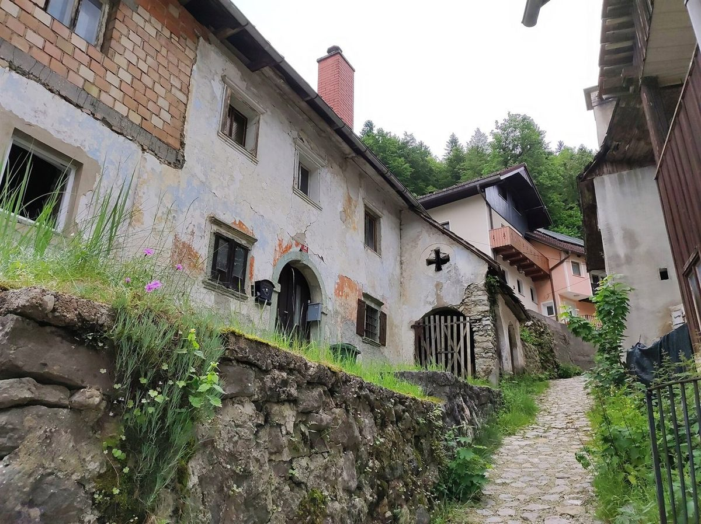

制作側の連想
COBBLEという響きから
店名の由来や意味は分かりません。制作側は「COBBLE」という語から、丸みのある小さな石を敷き詰めた石畳(玉石)を連想し、このサイトを「石畳を一枚ずつ敷いていく」作りにしました。各ページは石のひとつ。お店の理念・由来とは無関係の、制作側の連想です。
敷き込み図
五つの石をたどる


写真はお店のものではなく、国外または撮影地不明のフリー素材です。
ご案内
確認できていること
| 所在地 | 〒768-0021 香川県観音寺市吉岡町371-7 |
|---|---|
| 電話 | なし |
| 営業時間 | 準備中 |
| 定休日 | 準備中 |
| ご予約 | 準備中 |
| 駐車場 | 準備中 |
| SNS | Instagram @bakery_cobble |
